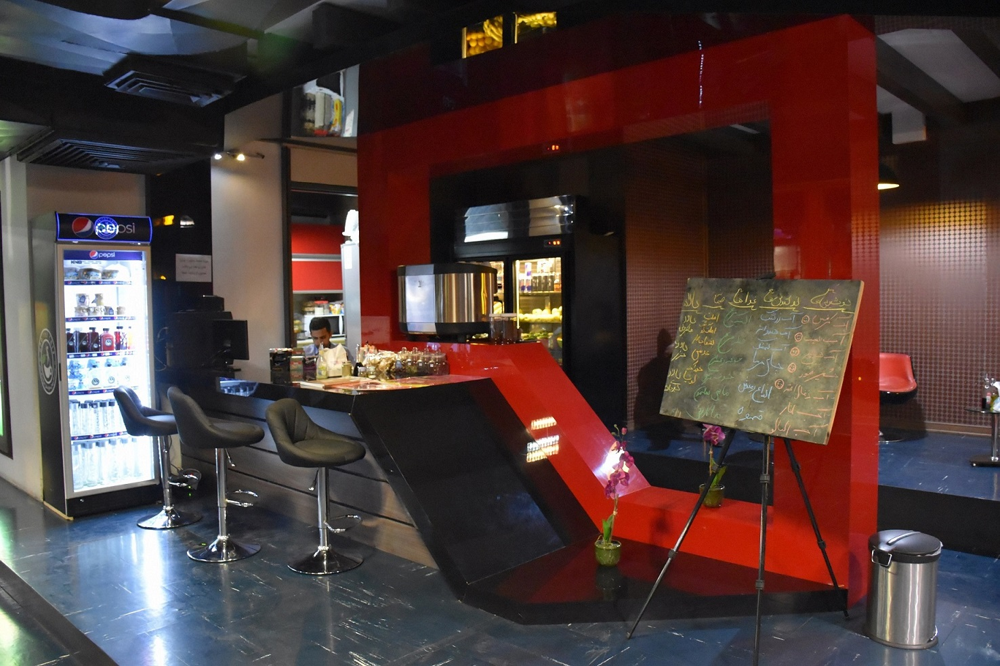

محیط باشگاه
باشگاه بدنسازی ما محیطی دوستانه و پویا دارد که ورزشکاران را به خود جذب می کند. دکوراسیون مدرن و امکانات راحتی که در اختیار ورزشکاران قرار میدهیم، برای ایجاد یک تجربه ورزشی لذت بخش و مثبت بسیار مهم است. همچنین، با توجه به فضای سالن استخر و امکانات بهداشتی ورزشکاران ما راضی کننده و راحت هستند. بنابراین، شما میتوانید در محیط دلپذیر و دوستانه باشگاه ما از ورزش لذت ببرید و به بهبود فیزیکی خود بپردازید.
در باشگاه ما، به نظافت و بهداشت محیط بسیار توجه داریم و تلاش می کنیم که محیطی تمیز و بهداشتی برای ورزشکارانمان ارائه کنیم. تمامی امکانات و تجهیزات مورد نیاز بهبود فیزیکی در شرایط بهداشتی مناسب قرار داده شده اند. تمیزی سالن ها، لباسشویی، و آبیاری مرتب از جمله مواردی است که ما بر آن تاکید داریم تا ورزشکاران بتوانند به سرعت واکنش گرفته و به مشکلی بر نخورند. از این رو، شما می توانید با آسودگی و با آرامش در محیط تمیز و بهداشتی باشگاه ما ورزش کنید.

دستگاه آنالیز

این دستگاه اطلاعات مهمی در مورد عملکرد و وضعیت فیزیکی افراد فراهم می کنند و به مربیان و متخصصین ورزش کمک می کنند تا برنامه های مناسب تمرینی و تغذیه ای برای ورزشکاران خود طراحی کنند.
با استفاده از این دستگاه، ورزشکاران می توانند عیب یابی کنند و نقاط قوت و ضعف خود را شناسایی کنند و بر اساس آن، برنامه های تمرینی خود را بهبود دهند. همچنین، اطلاعات به دست آمده از این دستگاه ها می تواند به ورزشکاران کمک کند تا به مراتب بهتر و کارآمدتر تمرین کنند و به دستیابی به اهداف آنها کمک کند. به طور کلی، دستگاه های انالیز یک باشگاه بدنسازی ابزاری مهم و حیاتی برای بهبود عملکرد و بهبود وضعیت فیزیکی ورزشکاران هستند.
وسایل و دستگاه
در باشگاه بدنسازی ما، تجهیزات حرفه ای و مدرن مانند دمبل های قابل تنظیم و دستگاه های انالیز برای ارائه خدمات به ورزشکاران ما در دسترس است. دمبل ها ابزاری کارآمد برای تمرینات تقویتی، شکل دهی بدن و افزایش عضلات هستند. همچنین، دستگاه های انالیز اطلاعات دقیقی در مورد وضعیت فیزیکی ورزشکاران ارائه می دهند تا بتوانیم برنامه های تمرینی و تغذیه ای مناسب برای آنها طراحی کنیم. از این رو، در باشگاه ما تلاش می کنیم تا امکانات و تجهیزات لازم را برای دستیابی به اهداف ورزشی شما فراهم کنیم.
اگر به دنبال بهترین نتایج ورزشی خود هستید، در باشگاه ما می توانید از دمبل های برتر و دستگاه های انالیز پیشرفته استفاده کنید. این تجهیزات به شما کمک می کنند تا عملکرد بدنی خود را بهبود بخشیده و به اهداف خود نزدیک تر شوید. همچنین، تیم متخصص ما آماده است تا شما را در مسیر بهبود فیزیکی ورزشیتان همراهی کند. به باشگاه ما بپیوندید و تجربه ورزشی بی نظیری را تجربه کنید.
مربیان با تجربه

مربیان ما در باشگاه بدنسازی تیمی از متخصصان حرفه ای و با تجربه هستند که به ارائه خدمات ورزشی با کیفیت برای ورزشکاران علاقه مندند. آنها با دانش و تجربه خود در زمینه بدنسازی و ورزش، به ورزشکاران کمک می کنند تا برنامه های تمرینی و تغذیه ای مناسب برای دستیابی به اهداف خود داشته باشند. همچنین، مربیان ما با برخورد حرفه ای و پشتیبانی فراوان، ورزشکاران را در مسیر بهبود فیزیکی ورزشیشان همراهی می کنند. از این رو، شما می توانید با اطمینان به تلاش برای بهبود ورزشی خود بپردازید و از راهنمایی های ارزشمند مربیان ما بهره مند شوید.
با مربیان حرفه ای و متخصص باشگاه بدنسازی ما، شما می توانید بهترین نتایج ورزشی خود را به دست آورید. آنها به عنوان راهنما و پشتیبان شما در مسیر بهبود ورزشیتان حضور دارند و با ارائه برنامه های تمرینی منطبق بر نیازهای شما، به شما کمک می کنند تا به اهداف خود دست یابید. از این رو، اعتماد به مربیان ما می تواند به شما انگیزه و انگیزه لازم برای پیشرفت ورزشیتان را ایجاد کند. به باشگاه ما بپیوندید و با مربیان ما بهترین نتایج خود را بیابید.
بوفه باشگاه
با بوفه اختصاصی باشگاه ما، شما میتوانید از انواع غذاهای سالم و متنوع برای انرژیزا کردن خودتان قبل و بعد از تمرین استفاده کنید. بوفه ما دارای انواع آبمیوه، پروتئینهای سالم، مواد غذایی با مواد ترکیبیتی، و محصولاتی که به عنوان پارچه روزانه مناسب برای حمایت از ورزشکاران شناخته میشوند. از این رو، شما میتوانید پس از تمرینات خود به نحو احسن پاسخ دهید و از آن انرژی کافی برای بازسازی عضلات و پیشرفت فیزیکی خود بدست آورید. با بوفه باشگاه ما، شما میتوانید همیشه به بهترین روش ممکن از تمرینات خود حمایت کنید.
